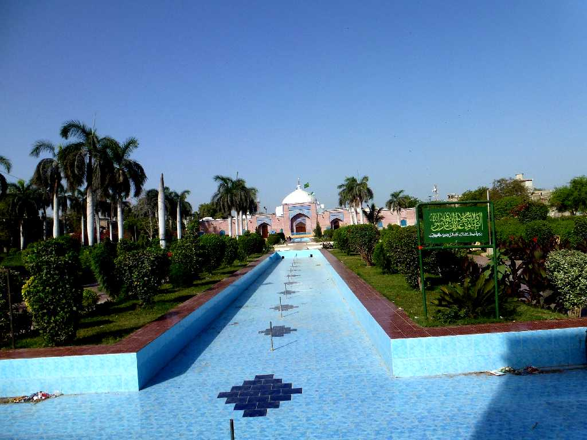
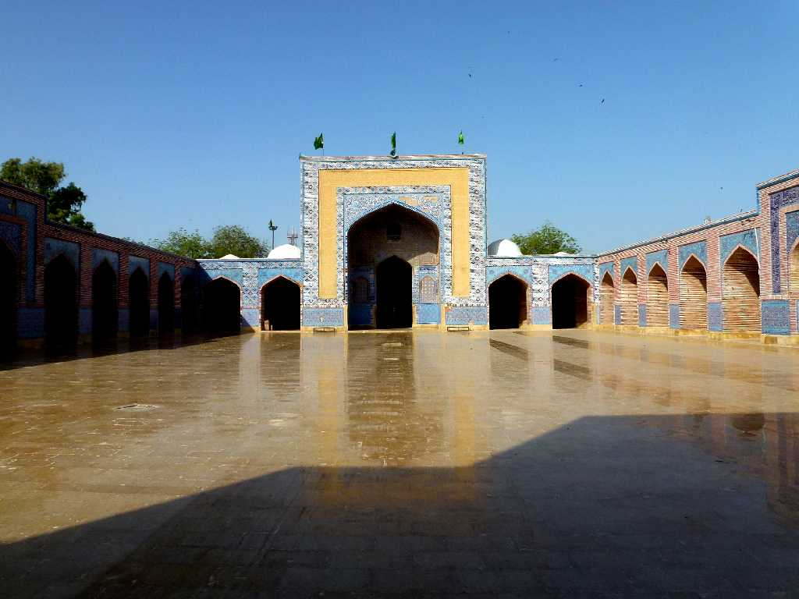
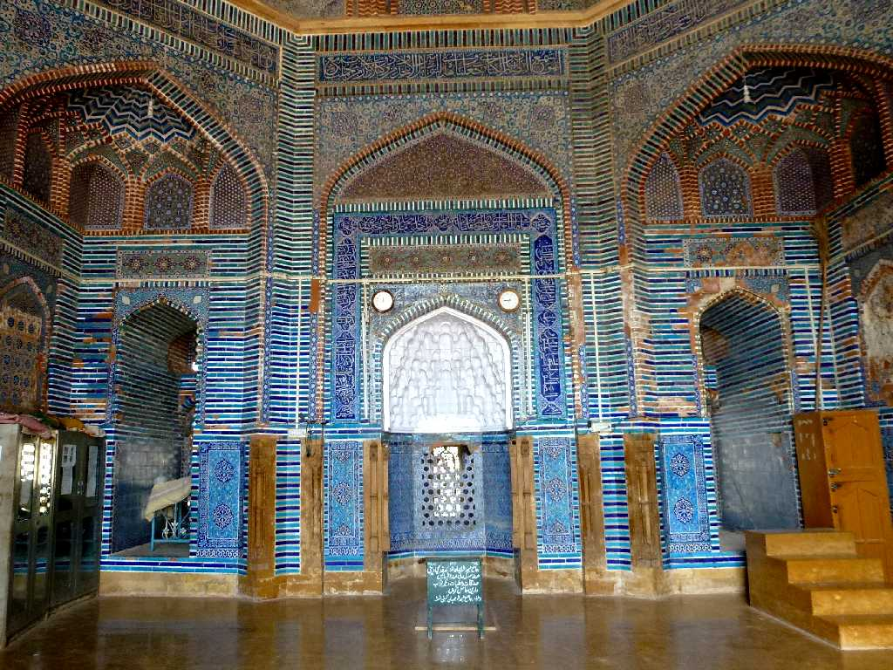
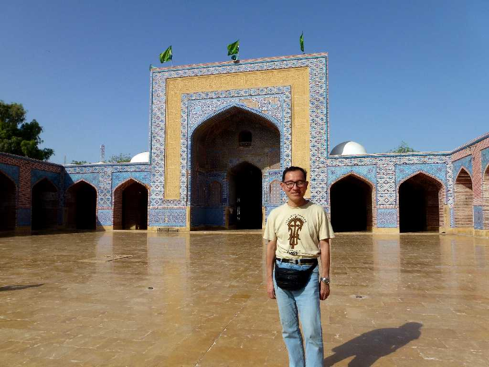
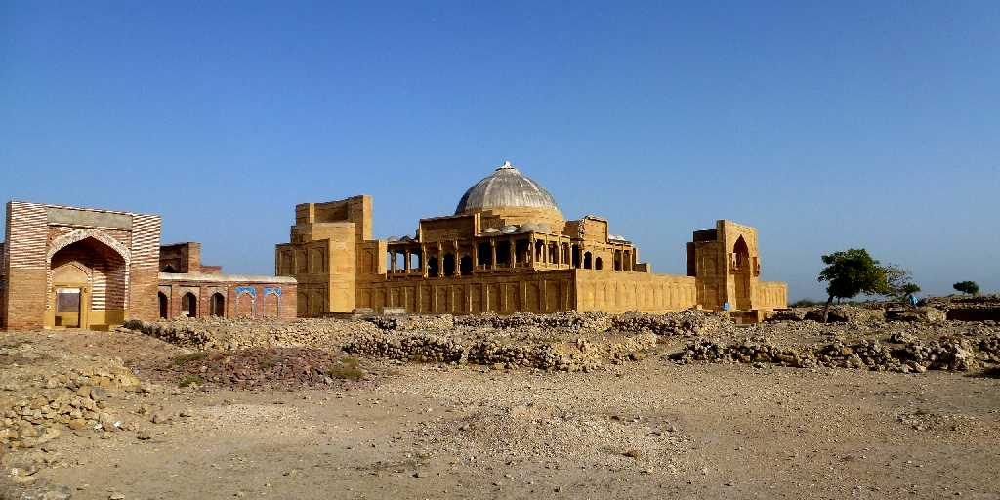
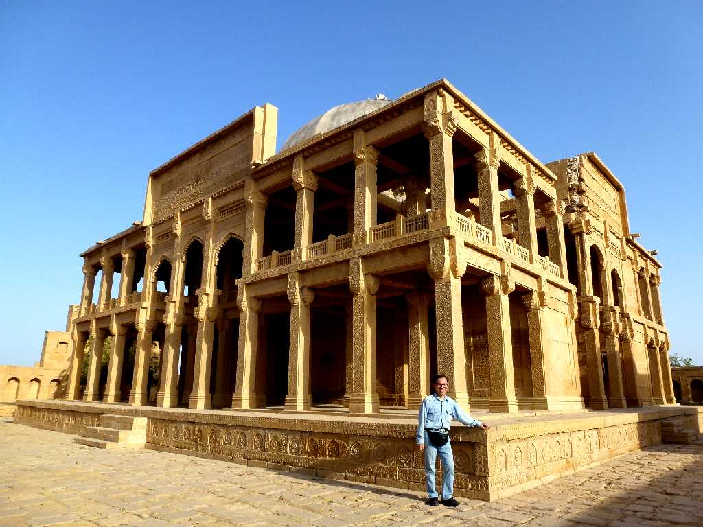
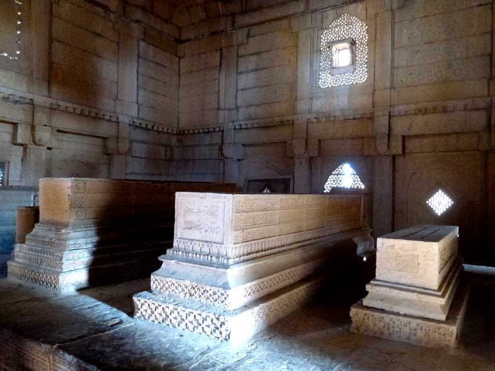

Shah Jahan Masjid Makli Thatta
１６４９年に創られたムガル帝国第５代君主シャージャ・ハーン・モスク

Shah Jahan Masjid Makli

Mihrab Shah Jahan Masjid

March 24 2013 Shah Jahan Masjid

Mirza Essa Khan Tarkhan Tomb Makli Thatta
タルハーン王朝の創始者イーサ・ハーンが１５６５年に亡くなるまでタッターを１０年余り支配した王墓ミルザ・イーサ・ハーン廟

March 24 2013 Mirza Essa Khan Tarkhan Tomb

Mirza Essa Khan Tarkhan Tomb